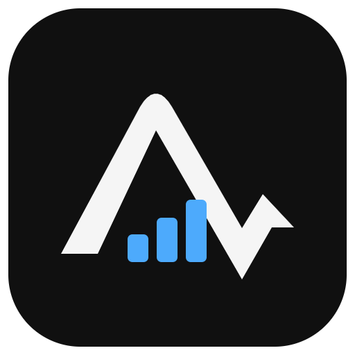
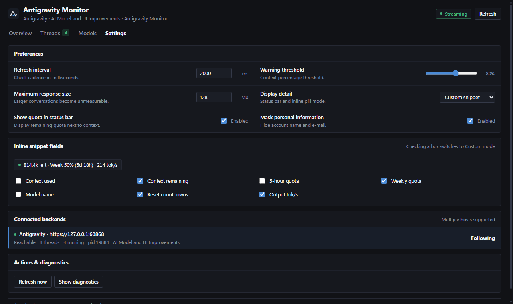
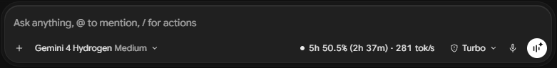

<!doctype html>
<html lang="en">
<meta charset="utf-8">
<title>Antigravity Monitor banners</title>
<style>
  * { box-sizing: border-box; }
  body { margin: 0; background: #111216; color: #f2f4f8; font-family: "Segoe UI", Arial, sans-serif; }
  section { width: 1600px; height: 900px; position: relative; overflow: hidden; padding: 56px 72px; background: #111216; }
  .brand-row { display: flex; align-items: center; gap: 18px; font-size: 28px; font-weight: 650; letter-spacing: -0.5px; }
  .brand-row img { width: 64px; height: 64px; border-radius: 12px; }
  h1, h2, p { margin: 0; }
  .muted { color: #8b91a0; }
  .custom-grid { display: grid; grid-template-columns: 560px 1fr; gap: 48px; margin-top: 38px; align-items: start; }
  .custom h2 { font-size: 68px; line-height: 1.04; letter-spacing: -2.5px; font-weight: 700; }
  .custom .copy { margin-top: 16px; font-size: 24px; line-height: 1.4; color: #b4bac8; }
  .choices { display: grid; grid-template-columns: 1fr 1fr; gap: 12px 24px; margin-top: 28px; font-size: 20px; }
  .choice { padding: 10px 0; border-bottom: 1px solid #252833; display: flex; align-items: center; gap: 10px; }
  .choice::before { content: ""; width: 8px; height: 8px; border-radius: 2px; background: #4a8ad6; flex: 0 0 auto; }
  .preview-stack { display: flex; flex-direction: column; gap: 18px; }
  .frame { background: #16181e; border: 1px solid #252833; border-radius: 8px; overflow: hidden; }
  .frame img { display: block; width: 100%; height: auto; }
  .pill-row { display: flex; align-items: center; gap: 16px; }
  .pill-row .frame { flex: 1; }
  .footer { position: absolute; bottom: 32px; left: 72px; right: 72px; display: flex; justify-content: space-between; color: #8b91a0; font-size: 17px; }
</style>
<section class="custom" id="customization">
  <div class="brand-row">Antigravity Monitor</div>
  <div class="custom-grid">
    <div>
      <h2>Your snippet.<br>Zero clutter.</h2>
      <p class="copy">Choose what sits beside your composer or VS Code status bar.</p>
      <div class="choices">
        <span class="choice">Context used</span>
        <span class="choice">Context remaining</span>
        <span class="choice">5-hour quota</span>
        <span class="choice">Weekly quota</span>
        <span class="choice">Model name</span>
        <span class="choice">Reset countdowns</span>
        <span class="choice">Output tok/s</span>
      </div>
    </div>
    <div class="preview-stack">
      <div class="frame"></div>
      <div class="pill-row">
        <div class="frame"></div>
      </div>
    </div>
  </div>
  <div class="footer"><span>Instant preview · Persistent local preferences · Custom, Full &amp; Essentials</span><span>Actual v1.1.0 UI captures</span></div>
</section>
</html>
